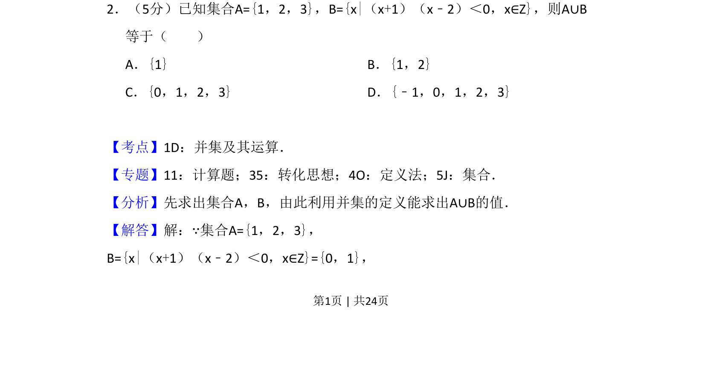
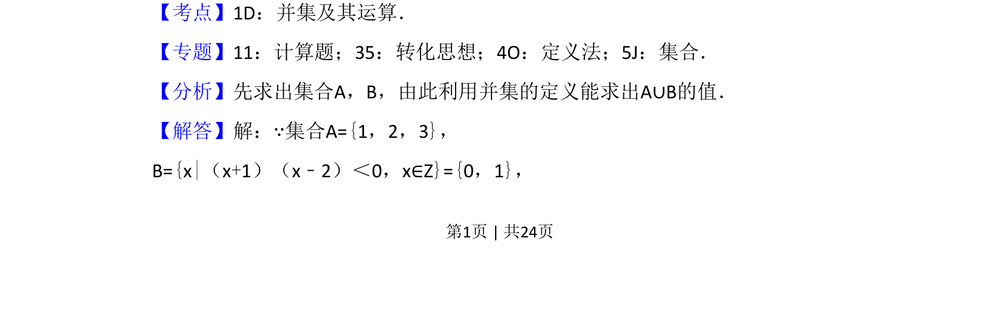
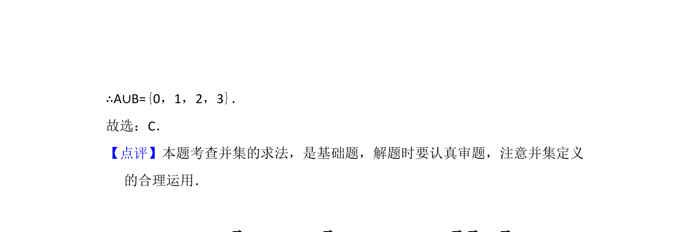

考点：集合表示法 一元二次不等式 并集运算

该题考查集合的并集运算，需先解不等式确定集合B的元素。


📄 原 PDF 第 1 页：
素材/真题/吉林/2008-2024·（吉林）数学高考真题/2016年高考数学试卷（理）（新课标Ⅱ）（解析卷）.pdf
2．（5分）已知集合A={1，2，3}，B={x|（x+1）（x﹣2）＜0，x∈Z}，则A∪B 等于（ ） A．{1}B．{1，2} C．{0，1，2，3}D．{﹣1，0，1，2，3}
【考点】1D：并集及其运算．菁优网版权所有 【专题】11：计算题；35：转化思想；4O：定义法；5J：集合． 【分析】先求出集合A，B，由此利用并集的定义能求出A∪B的值． 【解答】解：∵集合A={1，2，3}， B={x|（x+1）（x﹣2）＜0，x∈Z}={0，1}，